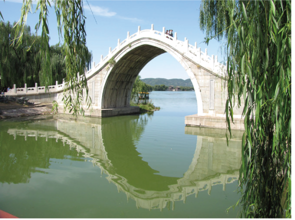
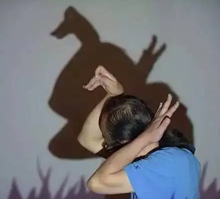
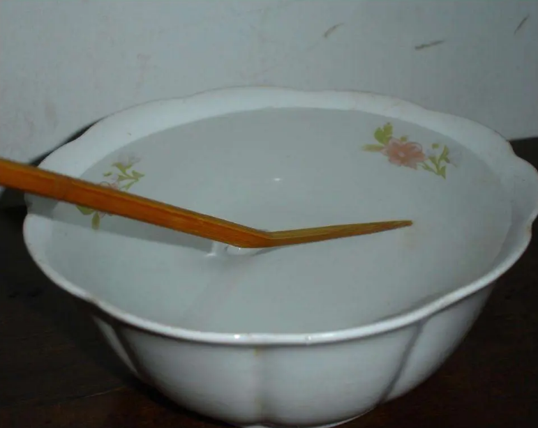
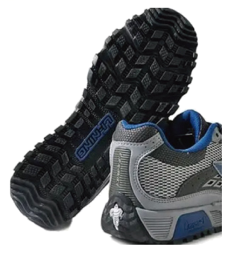
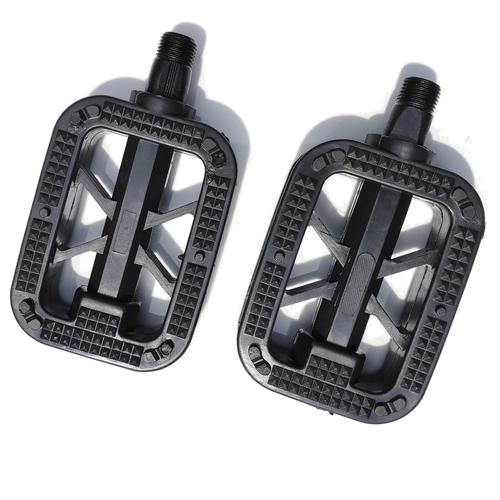
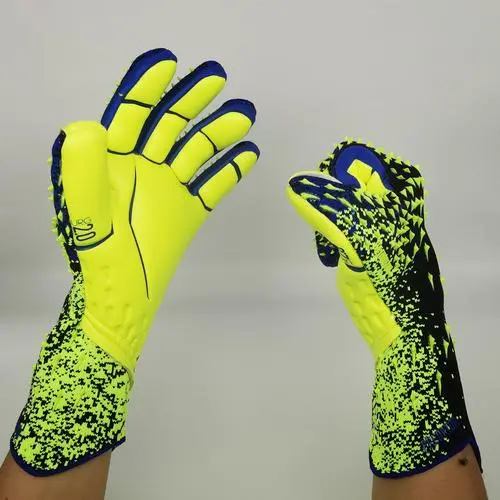
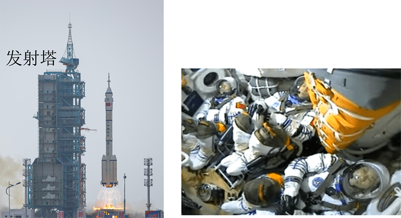

2023年北京市中考物理试题 · 选择题 第1、2、3、4、5题
1. 下列物品通常情况下属于导体的是（ ）
A. 纸杯B. 瓷碗C. 铁锅D. 木铲
2. 如图所示的光现象，由于光的反射形成的是（ ）
A.

桥在水中形成倒影B.

墙上呈现人的影子C.

筷子好像在水面处弯折D. 放大镜把字放大
3. 如图所示的实例，目的是为了减小摩擦的是（ ）
A.  轮滑鞋装有滚轮B.
轮滑鞋装有滚轮B.

运动鞋底有凹凸的花纹C.

脚蹬面做得凹凸不平D. 
守门员戴着防滑手套4. 2023年5月30日，搭载神舟十六号载人飞船的长征二号F遥十六运载火箭，在酒泉卫星发射中心成功发射。图中所示的是火箭上升和此过程中航天员在舱内的情境，下列说法正确的是（ ）

A. 以地面为参照物，发射塔是运动的
B. 以发射塔为参照物，火箭是静止的
C. 以舱内 航天员为参照物，火箭是静止的
航天员为参照物，火箭是静止的
D. 以舱内的航天员为参照物，发射塔是静止的
5. 将某种金属制成的勺放入15℃的水中，金属勺没有熔化；将该金属勺放入45℃的水中，发现金属勺逐渐熔化。该金属的熔点可能是（ ）
A. 10℃B. 30℃C. 50℃D. 60℃